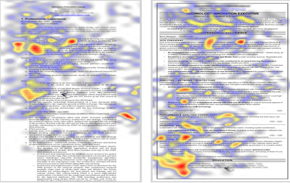
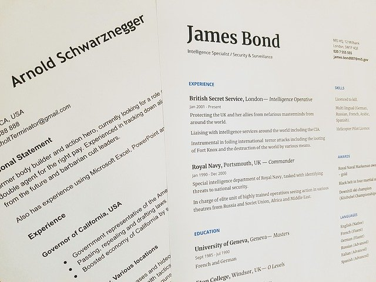
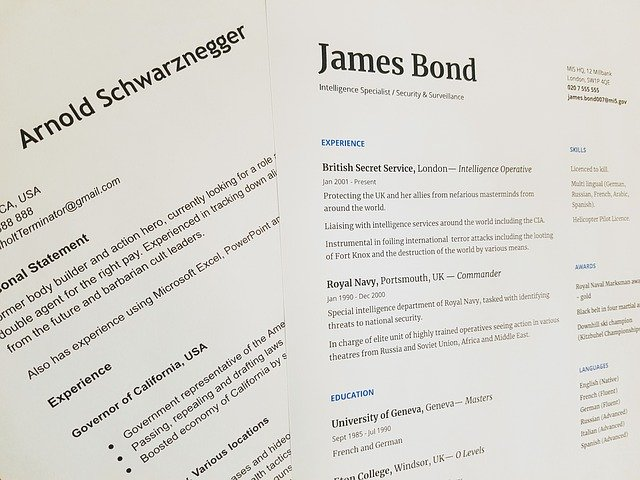

The Purpose of a Resume
So, what is a resume for? Many people would suggest that a resume is designed to get a person a job. However, no resume – however good – will ever get anyone a job. It’s the interview that leads to the offer. But the resume is a key step in securing that interview.
Employers receive multiple resumes for every vacant position, and it is unrealistic for them to scour through each one as the find that perfect candidate. TheLadders.com did a study with recruiters and hiring managers to see how much time they dedicate to resume reviews, and what it is they focus on. The average amount of time spent on each resume? Six-to-nine seconds!

Resume Tips
With so little time to catch the attention of a potential employer, there are certain things to keep in mind. Some tips in drafting your resume include:
- You need to draft a new resume for each position, utilizing the key words and phrases from the job description.
- Don’t try to fill the page. Use standard margins and include “white space” to make it easier to spot key information.
- In general, do not go back more than 10 years in professional experience.
- No more than 3 bullets per position. The decision-maker is probably not going to read past the first one anyway.
- Whenever possible, make your bullets quantifiable, and include not just what you did, but what impact it had on the company.
- Keep it to 1-2 pages. Anything longer, in most circumstances, will likely end up in the trash.